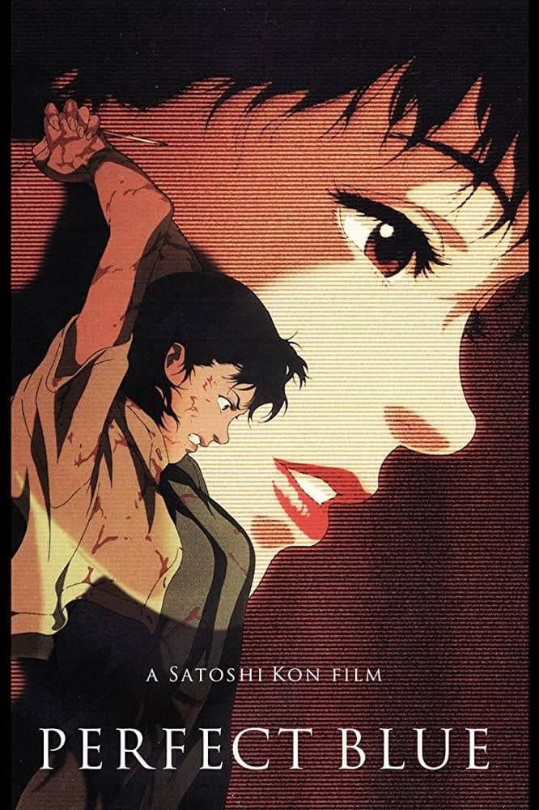

Other films by director Satoshi Kon

Duration time: 1h 32 mins
Genre: action/comedy
Synopsis of Tokyo Gofathers: middle-aged alcoholic Gin, teenage runaway Miyukiand and former drag queen Hana are a trio of homeless people surviving as a makeshift family on the streets of Tokyo. While rummaging in the trash for food on Christmas Eve, they stumble upon an abandoned newborn baby in a trash bin. With only a handful of clues to the baby's identity, the three misfits search the streets of Tokyo for help in returning the baby to its parents.

Duration time: 1h 21 mins
Genre: horror/mystery
Synopsis of Perfect Blue: A young Japanese singer is encouraged by her agent to quit singing and pursue an acting career, beginning with a role in a murder mystery TV show.
About Satoshi Kon
Born: October 12, 1963 in Sapporo, Japan.
Died: August 24, 2010
Satoshi Kon was a Japanese film director, animator, screenwriter and manga artist from Sapporo, Hokkaido, and a member of the Japanese Animation Creators Association. He was a graduate of the Graphic Design department of the Musashino Art University.